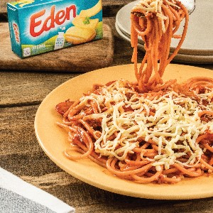

Filipino Spaghetti

Description
Filipino spaghetti is a Filipino adaptation of Italian spaghetti with Bolognese sauce.
It has a distinctively sweet sauce, usually made from tomato sauce sweetened with brown
sugar and banana ketchup. It is typically topped with sliced hot dogs or smoked
longganisa sausages, giniling, and grated cheese.
Ingredients
- 1 KILOGRAM SPAGHETTI NOODLES
- 4 TABLESPOONS COOKING OIL
- 1 TEASPOON GARLIC, MINCED
- 1 PIECE MEDIUM ONION, CHOPPED
- 7 TABLESPOONS BUTTER
- 2 TABLESPOONS SALT
- 3/4 KILOGRAM GROUND BEEF
- 5 PIECES HOTDOGS, SLICED
- 560 GRAMS PINOY-STYLE SPAGHETTI SAUCE
- 2 PIECES BOULLION BEEF CUBES, DISSOLVED IN WATER
- 1 BOTTLE BANANA KETCHUP
- 1 CUP EDEN MELT SARAP
Steps
- Cook pasta according to instructions on the packaging. Drain and set aside.
- In a saucepan, saute garlic and onion in butter until onions turn translucent.
- Add ground beef and cook for 5 minutes. Add hotdog and cook for 2 minutes.
Add spaghetti sauce, bouillon cubes, banana ketchup, and water.
Simmer for 20 minutes, stirring occasionally.
- Pour spaghetti sauce over pasta. Top with grated cheese and serve.